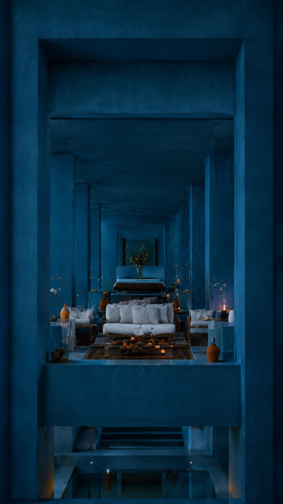
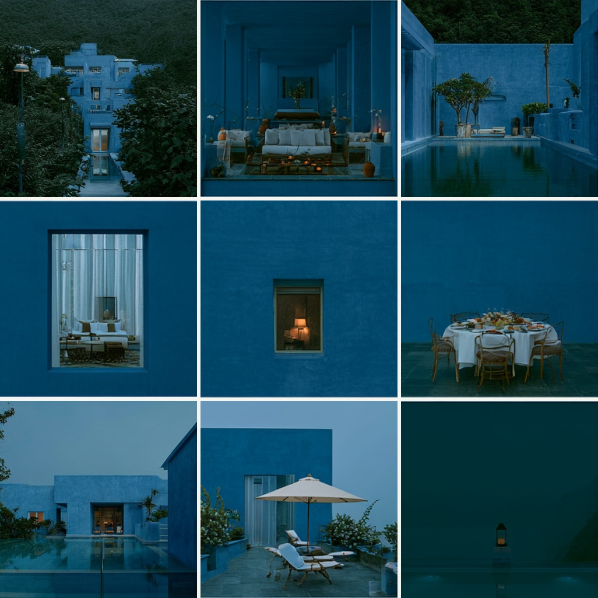
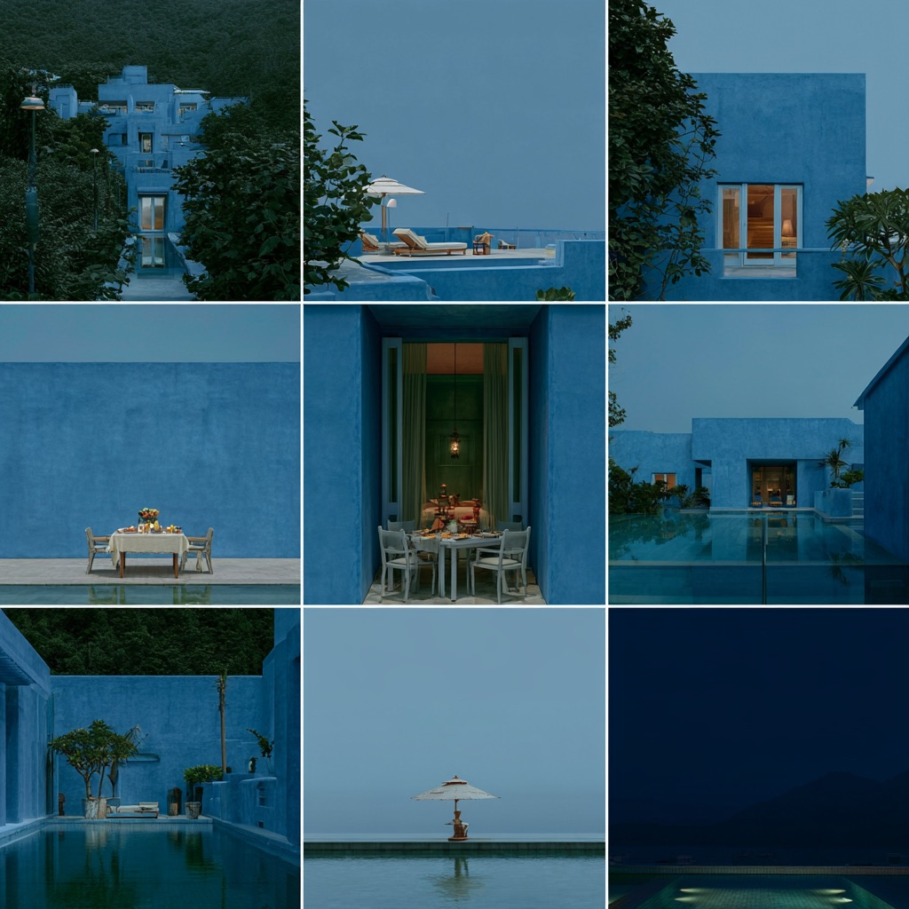

Image / in progress
Dark Mediterranean
An in-progress hospitality study that takes a single blue building and holds it at one moment of dusk, testing how far a grid can travel from establishing shot to occupied room without the light ever changing.
- Year
- 2026
- Kind
- Image
- Role
- Concept, art direction, generative production
- Frames
- 9:16 stills and 3x3 editorial grids
The constraint
One colour, one hour, nine distances.
Everything in the set is the same lime-washed blue at the same blue hour. The only variable allowed to move is how close the camera stands, so the sequence reads as one evening rather than a collection of renders.




Structure
Establishing to intimate.
The grid is ordered as a walk, not as a portfolio. Each row moves the viewer one distance closer to a person who is never shown.
-
Row I
The hillside
The resort seen whole, through trees, from outside its own boundary.
-
Row II
The threshold
Windows and doorways, each one a lit interior read from the cold side of the wall.
-
Row III
The table
Dinner laid, loungers turned out, a lantern left on. Occupied, and empty.
How it is being built
Pipeline.
Built as a Runway workflow so the palette and hour stay locked while the camera distance is the only prompt that changes.
One blue, one blue hour, one material vocabulary fixed before generation.
A superset of frames at every distance, far more than the final nine.
The set cut down to a nine-frame walk that only ever moves inward.
Warm interiors protected so they survive as the single accent against the blue.